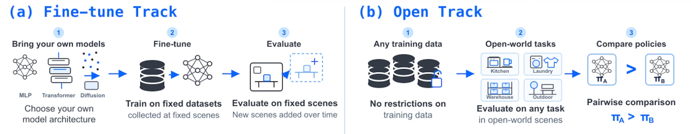
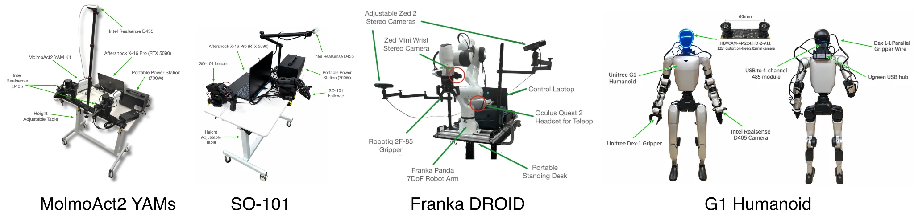

RoboColosseum: A Scientific Megaproject for Evaluating Physical Intelligence In-the-Wild
An open, decentralized initiative for large-scale, in-the-wild evaluation of physical intelligence
1. Motivation: Why Evaluation in Robotics
Robotics is far from solved. Despite rapid advances in robotics foundation models, much of our measurable progress remains confined to simulation and controlled laboratory settings. Gains on these benchmarks do not necessarily translate into robots that can operate reliably in the unpredictable conditions of restaurants, homes, industrial sites, and the wider world. The central question remains: how much better are these models actually getting at working in the real world?
Answering that question requires sustained, large-scale evaluation across diverse tasks, environments, embodiments, and operating conditions. Yet the field still lacks the shared physical infrastructure and coordinated effort needed to carry out this evaluation consistently over time. Individual experiments offer valuable snapshots, but understanding progress across the field requires a lasting foundation for measurement, comparison, and discovery.
Scientific progress has often depended on ambitious investments in shared infrastructure. The Hubble Space Telescope and the Large Hadron Collider expanded what researchers could observe, measure, and understand, enabling entire communities to investigate questions beyond the reach of individual laboratories. Robotics needs a similar commitment to building the infrastructure that makes new science possible and seeing through the “noisy”. Its experiments require access to physical systems and diverse environments, supported by protocols that allow findings to accumulate into a shared body of evidence.
Through RoboColosseum, we are building this foundation: an open, decentralized network of robots, evaluation sites, and shared experimental protocols for studying physical intelligence in the real world. By connecting resources and contributors across locations, our aim is to make sustained physical evaluation accessible to a broader research community and enable experiments at a scale and diversity that individual institutions would struggle to achieve alone.
Our ambition is to establish a shared scientific instrument for physical intelligence, one that researchers can use to test hypotheses, uncover failure modes, compare approaches, and track progress over time. This infrastructure can make real-world capabilities measurable while supporting the discoveries that will shape the next generation of robotics.
2. Our Idea: A Shared Testbed for Physical Intelligence

To measure physical intelligence in the real world, we created RoboColosseum, an open, decentralized evaluation initiative co-founded by NUS MAGIC Lab, BitRobot Foundation, Singapore Embodied AI Centre, and Hugging Face.
We have established a distributed fleet of robots supported by dedicated, full-time robot riggers who conduct evaluations. The fleet spans single-arm manipulators, bimanual systems, and humanoids, with standardized hardware within each embodiment and shared evaluation protocols across sites. This combination of physical infrastructure, dedicated operators, and consistent procedures makes rigorous real-world evaluation a sustained operation that researchers can build on.
RoboColosseum organizes evaluation into two complementary tracks, each addressing a different dimension of physical intelligence.
The Fine-tuning Track measures how effectively models adapt to specific tasks. We maintain a growing collection of task demonstrations across embodiments, allowing models to be fine-tuned on the same task-specific datasets and evaluated at fixed sites under consistent conditions. This provides a common testbed for comparing approaches—including VLAs, WAMs, GAMs, RL-based policies, and agentic frameworks and studying how individual design choices affect real-world performance.
The Open Track measures what models can do out of the box. Models are evaluated without task-specific fine-tuning through pairwise comparisons across diverse real-world tasks and environments. By extending evaluation beyond a predefined task suite, this track allows researchers to examine where models generalize, where they fail, and how their capabilities differ. It gives frontier labs a practical foundation for studying how pre-training data mixtures and training objectives translate into physical capabilities in the wild.
3. The Technical Implementation
RoboColosseum standardizes hardware setups within each embodiment to support fair, reproducible evaluation at scale, while testing models across the varied conditions they will encounter in deployment. For the current setup, we have 4 different robot embodiments (Bimanual YAMs, SO-101, Franka DROID set, and G1 humanoid) and more robots to be added.

Our in-the-wild evaluation spans Singapore and global partner locations, with tasks that challenge spatial memory, dexterous manipulation, long-horizon planning, and real-time adaptability. As the evaluation network grows, it opens access to everyday environments and tasks: tidying chairs in classrooms, sorting food waste at food courts, shelving books in libraries, and performing household chores in real homes. These settings expose models to the physical variation and complexity of everyday use.
The Fine-tuning Track provides a consistent protocol for comparing models. Each model is fine-tuned on the same pre-collected dataset of 100 demonstrations per task, then evaluated over 25 trials per task at designated evaluation sites. Trials follow shared task definitions, with small variations in spatial arrangements and lighting conditions to assess robustness.
Models are evaluated and ranked using task progress scores and full-task success rates. Together, these metrics capture how much of a task a model can accomplish and how reliably it completes the entire task.
The Open Track evaluates models through blind pairwise comparisons and reports Elo ratings. We complement these with Difficulty-Calibrated Rasch (DCR), a statistical ranking method that jointly estimates policy ability and task difficulty from real-world trial outcomes. DCR accounts for differences in the difficulty of the tasks each policy encounters, supporting comparisons across diverse evaluation settings.
The core idea is simple: a policy’s probability of success depends on its ability relative to the task’s difficulty:
Here, θi represents policy ability and βj represents task difficulty. Higher ability increases the probability of success; greater difficulty reduces it.
Human difficulty ratings on a 1–10 scale inform the initial estimates of task difficulty, which are then refined using observed successes and failures. DCR preserves the distinction between both policies succeeding and both policies failing: these outcomes provide different evidence about task difficulty, even when both appear as ties in a pairwise comparison. As evaluations accumulate, DCR updates its estimates using all available trials and ranks policies by their posterior mean ability.
4. Initial RoboColosseum Results
At launch, RoboColosseum reports results from 15,000 real-world evaluation trials across four robot embodiments: SO-101, Bimanual-YAM, Franka, and Unitree G1. Our two standardized evaluation tracks assess complementary capabilities: adaptation through fine-tuning and zero-shot generalization to open-world tasks.
For the Fine-tuning Track, we evaluate five generalist robot models across all four embodiments: π0.5, MolmoAct2, LingBot2 VLA, G0.5, and GR00T N1.7. Each model is fine-tuned on shared task-specific demonstration datasets and evaluated under consistent protocols.
For the Open Track, our initial evaluation covers SO-101, Bimanual-YAM, and Franka. We evaluate the same five generalist robot models, trained for deployment on these platforms using large-scale datasets, including MolmoAct2-SO-101, MolmoAct2-YAM, and DROID. Here, zero-shot refers to evaluation without task-specific fine-tuning: the models must apply their learned capabilities directly to the evaluation tasks. We also evaluate three frontier models, xAI’s Grok 4.7, Claude Opus 5.5, and GPT-6 Astra, to examine how their capabilities translate into real-world robot performance.
5. The Future and How You Could Be Part of This
RoboColosseum is designed as an open community standard that invites global participation. Whether you are an academic researcher seeking evaluation hours, a robotics lab interested in hosting an evaluation node, or an organization wanting to contribute task benchmarks, we welcome you to join the movement.
Visit our project repository and community channels to submit your model checkpoints and start benchmarking in the real world.
Ecosystem and Acknowledgements
RoboColosseum is brought to life through the close collaboration of its founding community:
- NUS MAGIC Lab (led by Asst. Prof. Jiafei Duan at the NUS School of Computing) brings core research leadership in robot learning, dexterous manipulation, and foundation model design.
- BitRobot Foundation leads protocol design, node network orchestration, and infrastructure support for continuous benchmarking.
- Hugging Face supports open model hosting, benchmark transparency, and dataset accessibility for the global AI community.
We extend our deep gratitude to the Singapore Embodied AI Centre and Singapore's National Robotics Programme for providing crucial funding support, facilitating access to in-the-wild evaluation environments across Singapore, and enabling the development of industry-relevant task suites. Special thanks also to our real-world data partners, including FrodoBots, for supporting data collection in real homes and urban spaces across Southeast Asia.
Academic labs evaluate free, from a pool of 10,000 hours.